Contents
% ce 710 hmk2 clear all clc close all
Variables
layer 1 (top) ... nl (to bottom)
theta = fliplr([0 45 -45 90 0].* pi/180); thk = zeros(1,length(theta)) + 0.0025; nl = length(thk); a = 20; % plate width; b = 10; % plate height q0_ = 5.7; % plate load; % Transversly isotropic material properties Ell = 150e9; Ett = 12.1e9; vlt = 0.248; Glt = 4.4e9; vtt = 0.458; Gtt = Ett / (2*(1+vtt)); % Failure Strengths SLLt = 1500e6; SLLc = -1250e6; STTt = 50e6; STTc = -200e6; SLTs = 100e6; Sxzs = 100e6; Strength = [SLLt SLLc; STTt STTc; SLTs Sxzs];
Stiffness Matrix
syms th % tranformation Tij6 = [cos(th)^2 sin(th)^2 0 0 0 -sin(2*th); sin(th)^2 cos(th)^2 0 0 0 sin(2*th); 0 0 1 0 0 0; 0 0 0 cos(th) sin(th) 0; 0 0 0 -sin(th) cos(th) 0; cos(th)*sin(th) -cos(th)*sin(th) 0 0 0 (cos(th)^2-sin(th)^2)]; Tij = [cos(th)^2 sin(th)^2 2*sin(th)*cos(th); sin(th)^2 cos(th)^2 -2*sin(th)*cos(th); -cos(th)*sin(th) sin(th)*cos(th) (cos(th)^2-sin(th)^2)]; % compliance matrix Sij6 = [1/Ell -vlt/Ell -vlt/Ell 0 0 0; -vlt/Ell 1/Ett -vtt/Ett 0 0 0; -vlt/Ell -vtt/Ett 1/Ett 0 0 0; 0 0 0 1/Gtt 0 0; 0 0 0 0 1/Glt 0; 0 0 0 0 0 1/Glt]; % Stiffnes matrix in material coordinates Cijm6 = inv(Sij6); % Stiffness matrix in Structural coordinates Cij6 = Tij6*Cijm6*Tij6.'; % reduced stiffness in structural Cij = [Cij6(1,1) Cij6(1,2) 0; Cij6(1,2) Cij6(2,2) 0; 0 0 Cij6(6,6)]; hlam = sum(thk); % Create z dimensions of laminate z_(1) = -hlam/2; for i = 1:nl z_(i+1) = z_(1) + sum(thk(1:i)); end % extensional stiffness Aij = zeros(6,6); for i = 1:nl Aij = Aij + subs(Cij6,th,theta(i)) * (z_(i+1)-z_(i)); end % coupling stiffness Bij = zeros(6,6); for i = 1:nl Bij = Bij + 0.5* subs(Cij6,th,theta(i)) * (z_(i+1)^2-z_(i)^2); end % bending or flexural laminate stiffness relating moments to curvatures Dij = zeros(6,6); for i = 1:nl Dij = Dij + (1/3)* subs(Cij6,th,theta(i)) * (z_(i+1)^3-z_(i)^3); end
Cylindrical Bending of a laminated plate
% displacement in w (z direction) syms x y z q0 C1 C2 C3 C4 C5 C6 C7 A11 B11 D11 A16 B16 syms wfun ufun % EQ 4.4.1a eq1 = A11*diff(ufun,x,2) - B11*diff(wfun,x,3); % C5 C1 % EQ 4.4.1b eq2 = A16*diff(ufun,x,2) - B16*diff(wfun,x,3); % C5 C1 % EQ 4.4.1c eq3 = B11*diff(ufun,x,3) - D11*diff(wfun,x,4) + q0; % solve eq1 eq2 and eq3 to get the w and u functions % displacement in w (z direction) from eq1,eq2,eq3 wfun = A11*q0*x^4 / (4*(6*B11^2-6*A11*D11)) + C1 + C2*x + C3*x^2 + C4*x^3; % C1 C2 C3 C4 % displacement in u (x direction) from eq1,eq2,eq3 ufun = B11*q0*x^3 / (6*(B11^2-A11*D11)) + C7 + x*C6 + 3*B11*x^2*C5/A11 ;% C5 C6 C7 % cond1 -> w(0)=0 at x(0), roller C1sol = solve(subs(wfun, x, 0)==0,C1); % = 0 % cond2 -> angle at dw/dx at x(0) is 0, cantilever C2sol = solve(subs(diff(wfun,x),x ,0),C2); % = 0 % cond3 -> w(z) = 0 at x(a), roller C4sol1 = solve(subs(wfun,[x C1 C2],[a C1sol C2sol ]),C4); % C3 % cond4 u = 0 at x = 0 C7sol = solve(subs(ufun,x,0),C7); %=0 % u=0 at x = a C5sol1 = solve(subs(ufun,[x C7],[a C7sol]),C5); %C6 % cond 5 EQ 4.4.14a Myy = 0 @ x(a) (Mxx , B11 D11) (Myy, B12 D12) roller no moment C6sol1 = solve(subs( [B11*(diff(ufun,x)+0.5*diff(wfun,x)^2 ) - D11*diff(wfun,x,2)] ,... [x C1 C2 C4 C5 C7],... [a C1sol C2sol C4sol1 C5sol1 C7sol]),C6); % C6 C3 % EQ 4.4.13a, Nxx = 0 @ x(0) roller has no Nxx C6sol2 = solve(subs([A11* (diff(ufun,x) +0.5*diff(wfun,x)^2)-B11*diff(wfun,x,2)],... [x C1 C2 C4 C5 C7],[a C1sol C2sol C4sol1 C5sol1 C7sol]),C6);% C6 C3 C3sol = solve(C6sol1 == C6sol2,C3); C4sol = subs(C4sol1,C3,C3sol); C6sol = simplify(subs(C6sol2,C3,C3sol)); C5sol = simplify(subs(C5sol1,C6,C6sol)); % substitute integration constants with actual values( _ is actual number) C1_ = C1sol; C2_ = C2sol; C7_ = C7sol; C3_ = subs(C3sol,[q0 A11 B11 D11],[q0_ Aij(1,1) Bij(1,1) Dij(1,1)]); C4_ = subs(C4sol,[q0 A11 B11 D11],[q0_ Aij(1,1) Bij(1,1) Dij(1,1)]); C5_ = subs(C5sol,[q0 A11 B11 D11],[q0_ Aij(1,1) Bij(1,1) Dij(1,1)]); C6_ = subs(C6sol,[q0 A11 B11 D11],[q0_ Aij(1,1) Bij(1,1) Dij(1,1)]); % function w(x) vertical displacement w along z with actual vaules wsol = subs(wfun,[q0 C1 C2 C3 C4 A11 B11 D11],... [q0_ C1_ C2_ C3_ C4_ Aij(1,1) Bij(1,1) Dij(1,1)]); % function u(x) horizontal displacement u along x with actual vaules usol = subs(ufun,[q0 C5 C6 C7 A11 B11 D11],... [q0_ C5_ C6_ C7_ Aij(1,1) Bij(1,1) Dij(1,1)]); ezsurf(x,y,wsol,[0,a,0,b]) view(-45,30) xlabel('x') ylabel('y') zlabel('z') title('Cylindrical Bending -Displacement of a plate With CLPT') wsol_opt = matlabFunction(wsol); [xmax,wmax] = fminsearch(wsol_opt,0);

Strain calculation
eq 3.3.8 (pg 116 reddy (pdf = 138))
epstotal = [diff(usol,x) + 0.5* diff(wsol,x)^2 - z*diff(wsol,x,2),0,0].'; epsx = epstotal(1);
Calculating and plotting Stress in each layer
res = 8; % accuracy of finding max and min stress xplot = linspace(0,a,res); yplot = linspace(0,b,res); for kstress = 1:3 % stress state s_x, s_y, s_xz figure(kstress+1) hold on for klay = 1:nl % loop through all layers
thplot = theta(klay);
zplot = linspace(z_(klay),z_(klay+1),res);
Calc Stresses
if kstress == 3 % Shear stresses syms G0 G0_ = -int(diff(s_stress(1),x),z)+G0.'; % solve for shear stresses from s_1 s_xz = solve(G0_,G0); % out of plane shear S_xz does not need to be transformed ?? ezsurf(s_xz, [0, a, z_(klay), z_(klay+1)]) else % normal stresses % Cij = reduced structural stiffness in strictural coordinates 3x3 % stress in structural coordinates s_stress = subs(Cij,th,thplot)*epstotal; % stressin material coordinates m_stress = subs(Tij,th,thplot)*s_stress ; ezsurf(m_stress(kstress),[0,a,z_(klay),z_(klay+1)]) end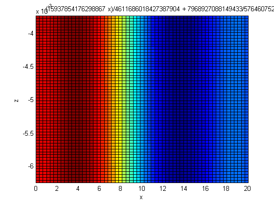 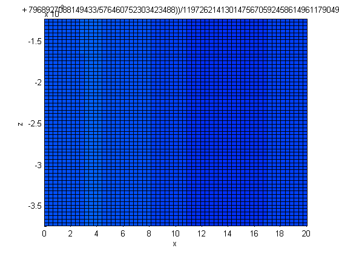 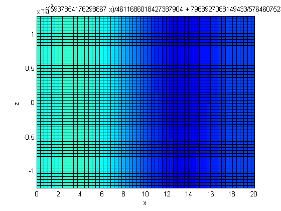 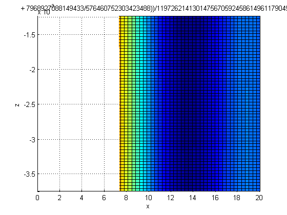 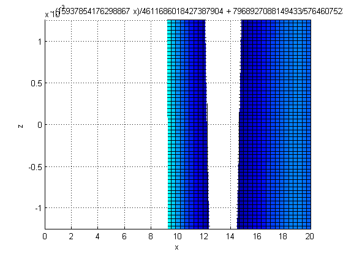 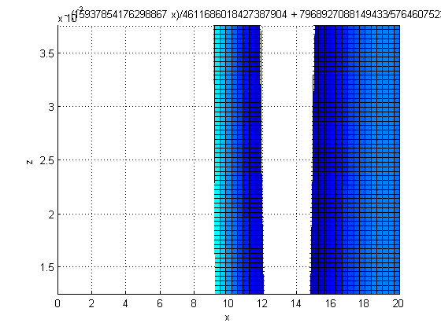 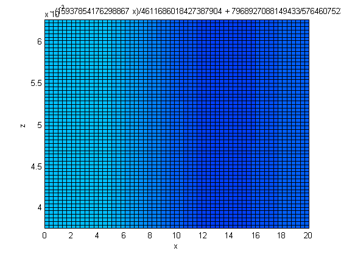 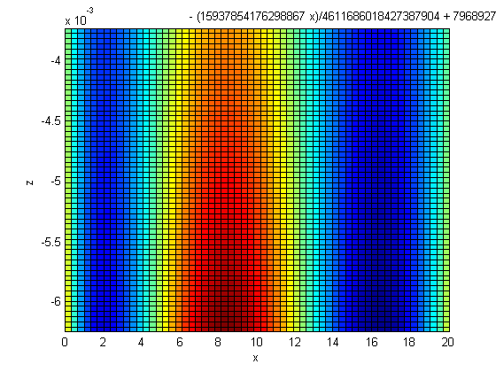 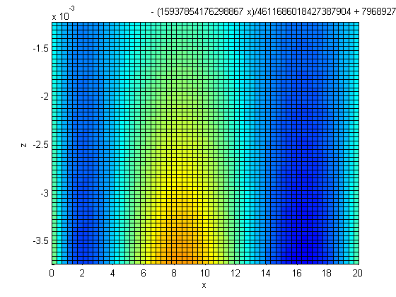 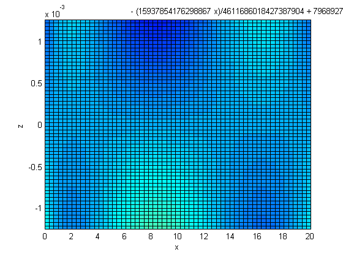 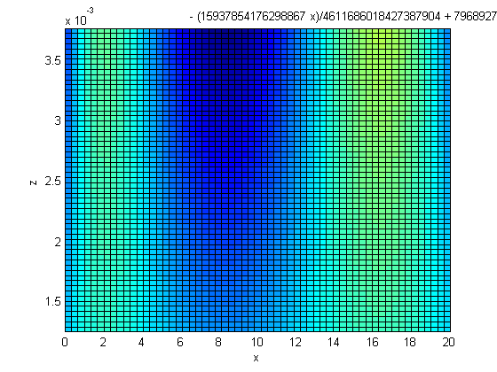 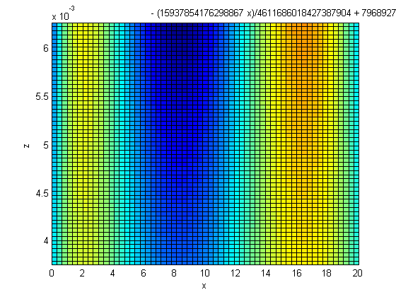
find max stress in each layer
ii=1;
for i = xplot
jj=1;
for j = zplot
if kstress == 3
stressplot(ii,jj) = subs(s_xz,[x z],[i j]);
else
stressplot(ii,jj) = subs(m_stress(kstress),[x z],[i j]);
end
jj=jj+1;
end
ii=ii+1;
end
Globalminstress(kstress,klay) = min(min(stressplot));
Globalmaxstress(kstress,klay) = max(max(stressplot));
%
end hold off axis auto title(strcat('\sigma_',num2str(kstress))) zlabel('stress(MPa)') view(-45,30) end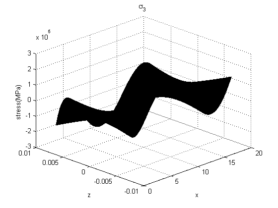
Plot max stress and failure strength
figure for i = 1:3 subplot(1,3,i) bar(Globalmaxstress(i,:)) hold on bar(Globalminstress(i,:)) scatter(1:nl,ones(nl,1).*Strength(i,1),'filled') scatter(1:nl,ones(nl,1).*Strength(i,2),'filled') hold off xlabel('layer') title(strcat('\sigma',num2str(i))) end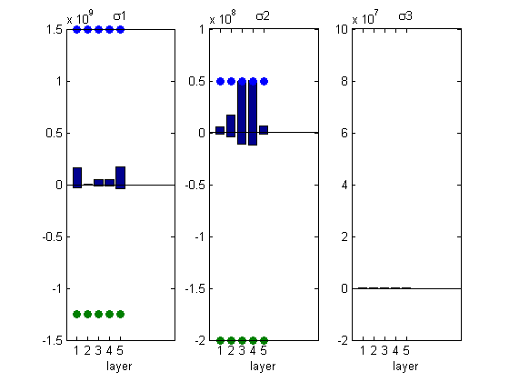